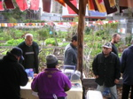
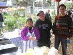

|
The Codemo band wagon arrives! |

And what an amazing garden they have going here down at Buncle St! So lush now - imagine what it's like in summer! |
Matt the driver. |

And the amazing Vilma of El Salvador - a key Buncle St gardener and lukily, given our Vilma couldn't come, a dab hand at them pupusas - with something like 100 pupusas being made on the day and everyone getting to try some. |
|
Here's another amazing character - Mrs Lee, who, get this, is 97 years old and still gardening strong! I'll bet you're wondering what she's planting - well - you'll just have to go and see! |
|
The first pupusas coming online. |
A lovely setting for out gardening get-together. By now a fair little crowd having drifted in. |
|
With a fine spread of food. |
And an introduction from Peta, |
A talk about Codemo from Nelson |
A handing over of a fig, lemon balm, and brahmi plant as a gesture of gratitude to our hosts. |
|
Then a few words from Vilma about her experiences in the garden. Her special white corn is apparently grown in several states of australia - just the right type for milling into pupusa flour! |
|
Meanwhile Andrew lends a hand to keep them pupusas pumping... |
|
|
and Mrs Lee gives a quick tour to two lucky visitors - the chap on the left now considering switching from accounting to permaculture/horticulture studies! |
The Vilma gave a fantastic tour of her beds and all the different medicinal plants she grows there. |
|
Apparently that's a picture of Mrs Lee on the right... |
|
|
A beautiful pinata of Marilena - she sells them and can be contacted on 9486-3245 |
Permasalsa time - let's see how many woman we catch Willie dancing with! There's one! |
|
|
Two! |
|
Three! |
Four - the man is unstoppable! |
|
And hus the days ended, and it was back to the minibus.. |
For a few laughs with Carlo on the way home... |